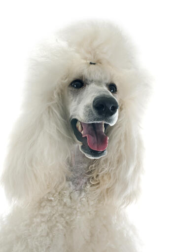
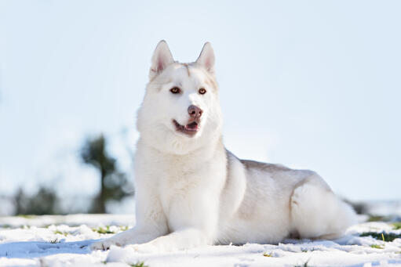
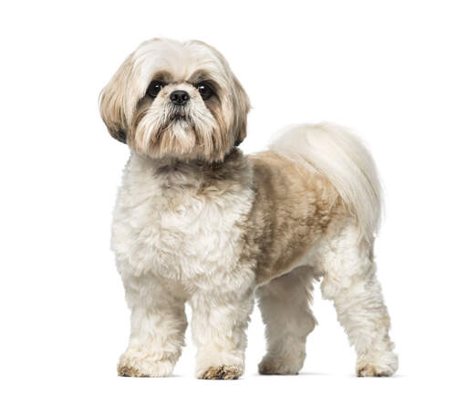
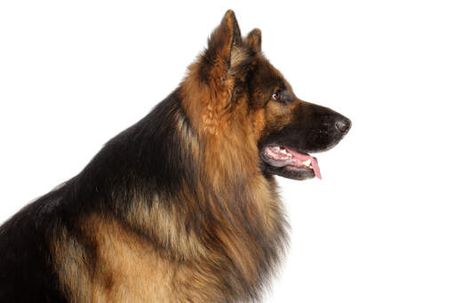
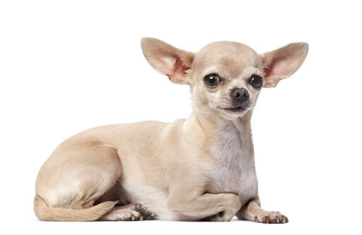
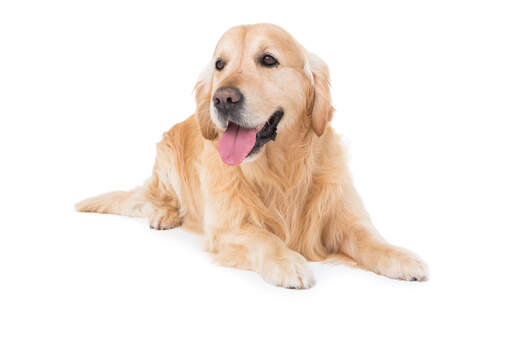
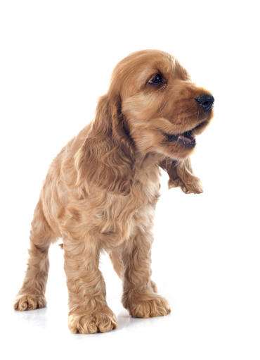
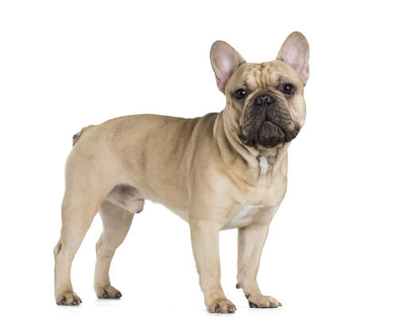
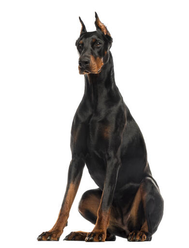
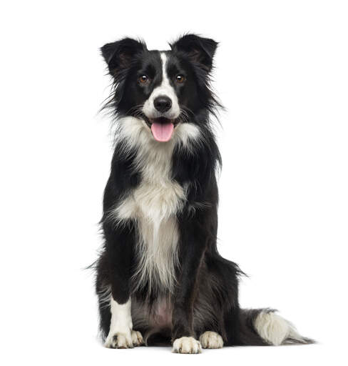

Types of Dog Breeds
| Image |
Breed |
Description |
|  |
Poodle |
Poodles are a quick-witted breed that rarely needs to be taught something more than a few times. Because of their rapid thinking, training them is simple. |
|  |
Siberian Husky |
The Husky is a breed that is attentive, energetic, and diligent. They are wonderful with kids because they were developed to guard them. |
|  |
Shih Tzu |
They make the perfect companion dog since they get along well with other animals, people, and dogs. While they are happy to play with polite kids, males can occasionally be irritable. |
|  |
German Sheperd |
German Shepherds are a clever and athletic breed that are ideally suited for advanced training. |
|  |
Chihuahua |
The Chihuahua, sometimes referred to as a small Terrier, makes up for its diminutive stature with personality. |
|  |
Golden Retriever |
Golden retrievers are a sociable, devoted, and very smart breed. They are excellent pets and get along well with kids and other animals. |
|  |
Cocker Spaniel |
Cockers are social, energetic dogs who like being around humans. They are excellent pets and are good with kids. |
|  |
French Bulldog |
Poodles are a quick-witted breed that rarely needs to be taught something more than a few times. Because of their rapid thinking, training them is simple. |
|  |
Doberman |
The Doberman Pinscher is dependable, watchful, alert, and constantly prepared to defend its family. This breed requires constant mental stimulation because it is intelligent. |
|  |
Border Collie |
Whether it's sheep, other dogs, or kids, they herd because they were bred to do so. |